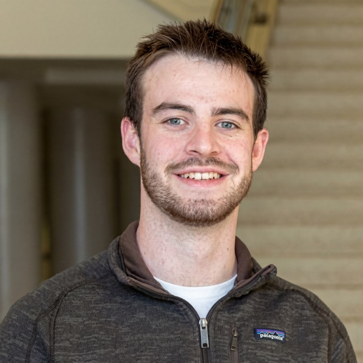
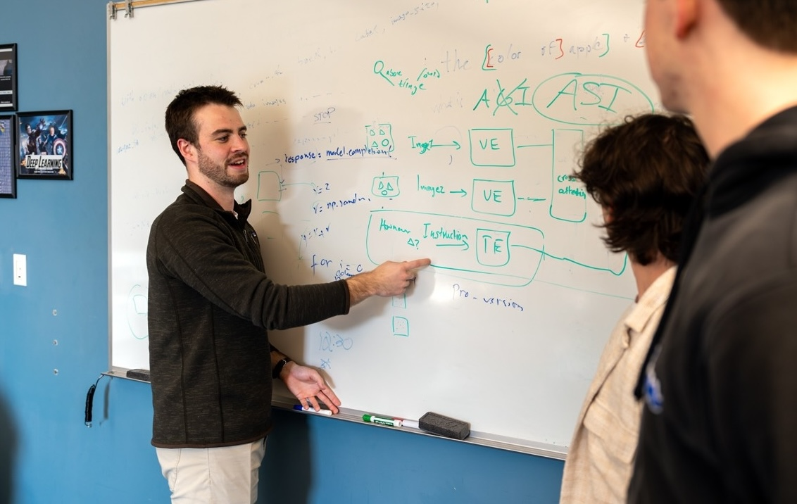

MSCS student at NYU Courant
AI/ML intern at Los Alamos National Laboratory
Interested in AI/ML and Computer Vision


Graduated from Auburn University in Spring 2026 with a B.S. in Computer Science and a minor in Statistics. Beginning an M.S. in Computer Science at NYU Courant in Fall 2026. Experienced with Python, PyTorch, SQL, C#, JavaScript, and more.
I am currently looking for AI/ML related Summer 2027 internships. Feel free to reach out!
This paper analyzes how and why VLMs such as GPT-4o have high scores on multimodal benchmarks, but often fail on extremely simple, abstract vision tasks.
This work has been featured by OpenAI, Google DeepMind, ByteDance, and has been cited 200+ times.
This paper explores how allowing LLMs to highlight their chain of thought to visually link information in the question and answer can increase LLM accuracy while also improving user experience.
Native multi-modal image-editing models like Nano Banana have shown an impressive ability to edit images through natural language prompts. This paper examines the strengths and weaknesses of these models when pitted against one-to-one matchups against human editors.
Researching rotation-invariant neural network architectures that leverage symmetry properties in molecular datasets to enable more accurate and data-efficient models.
I am an Undergraduate Researcher in Dr. Anh Nguyen's Explainable AI lab. Since joining in July
2024, I have co-authored three different papers on understanding the strengths and weaknesses of
multimodal LLMs/image-editing models and improving the reliability and interpretability of
LLMs.
This work led to me becoming an Auburn Undergraduate Research Fellow and receiving an
honorable mention for the Outstanding Undergraduate Researcher Award from the Computing Research
Association.
Collaborated with an interdisciplinary team on a DoD-supported project studying how different movements affect the long-term health of canines. Trained pose estimation models to track joint positions across video data and analyzed kinematic patterns over time.
Developed deep learning models to predict radar responses from 3D point clouds. Built roto-translation equivariant graph neural networks to leverage the geometric structure of point cloud data for more accurate signal prediction.
Finetuned an open-source LLM and trained with reinforcement learning to improve the model from only being able to complete 0.1% of Wordle games to successfully completing 18% of games.
For the final project of my graph theory class, I trained a model to reconstruct the adjacency matrix of a graph based off the attention values of an LLM. This project demonstrates an example of how the attention map patterns of LLMs can be used to help interpret the inner workings of language models.
Have a question or want to work together? Feel free to send me an email:
loganbolton101@gmail.com